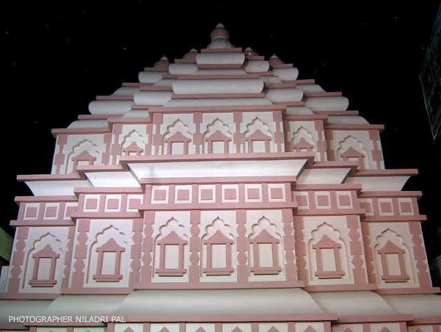
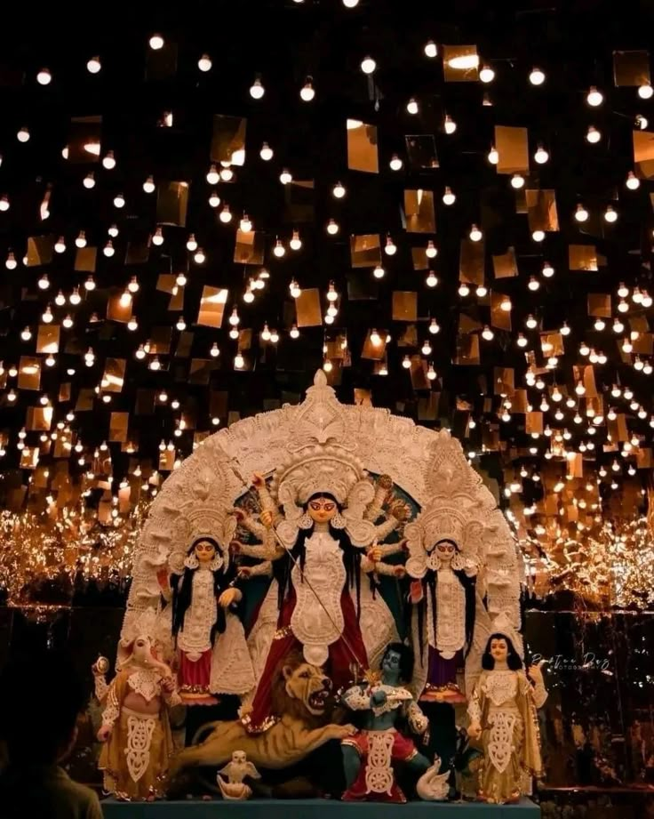

📸 Pandal Photo Gallery
Festival-inspired photographs. Tap an image to view it larger.

🌺 Festival Decorations

✨ Colourful Celebration

🪔 Festive Atmosphere
These are illustrative festival images, not verified photographs of Pulpar Badi Durga Maharani. Replace them with actual local pandal photos when available.